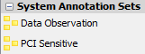
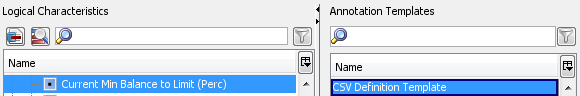
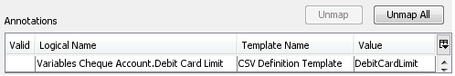

Annotation Models
The Annotation Model enables users to map Annotation Templates from a specific Annotation Set to characteristics to create annotations.
| System Annotation Sets are provided as part of the product and are pre-packaged as part of the software. |
An annotation is a property that is assigned to a characteristic using the Annotation Model editor. These annotations are used at deployment to enrich the characteristics' meaning and facilitate their use in the solution.
When an Annotation Template is mapped to a characteristic within the Annotation Model editor, the validation ensures that only valid characteristics can be mapped. A valid characteristic is one that adheres to the allowed types defined in the template, e.g. String, Integer, Float, Decimal and Date or a subset of these.
| The Annotation Template type dictates which characteristics can be mapped. The pattern dictates what the users can enter as a valid value in the Annotation. |
|
|
Although the PCI Sensitive Set is available in the |
One System Annotation Set exists in Strategy Management:
- Data Observation
Data Observation
A Data Observation Set is provided in the System Annotation Sets. This Data Observation Set contains three templates:
- DA Input
- DA Output
- Anonymise
DA Input and DA Output allow users to map which characteristic in the solution to form the transaction level data. It is this transaction data that will be loaded into the Decision Store and be made available to the user in the Studio via the Job Server.
The Anonymise template enables the user to tag which characteristics in this file will be anonymised. A characteristic that has been marked as anonymised will be written out with null data.
| A characteristic can only be assigned once for each annotation template in the Annotation Model. However, it can exist more than once in the transaction observation data since it can be mapped to both the DA Input and DA Output templates. |
| If a characteristic has been assigned to the DA Input, DA Output and Anonymise templates, the Anonymise template will take precedence and the data will be overwritten with null. |
In order for the Data Observation Model to be used to create transaction data, the Annotation Model needs to be included in the deployment. The Annotation Model is not included in any existing deployable component, therefore it will need to be manually added to the Label that contains the Decision Process Flow for which transaction level data is to be captured.
| One Annotation Model could be created for the observation data capture. However it is recommended, for best practice that separate Annotation Models are created for DA Input, DA Output and Anonymise. All these Annotation Models would need to be included in the deployment. |
The Annotation Model editor enables the user to map Logical Data Source characteristics to Annotation Templates. Depending on the Annotation Template mapped at deployment, it will enrich the characteristics' meaning and facilitate their use in the solution.
An Annotation Model is created from the Explorer Window.
| You will only be able to add a component type that has been allowed for the selected folder. If it is not allowed it will not be listed and therefore cannot be created. |
To create an Annotation Model
- From the Explorer window, right click at the required folder level and select Add component.
- Select Annotation model.
- In the Create component dialog, enter the name of the annotation model.
- Select the Open new components in the component editor check box.
- Click on the OK button.
The Annotation Model editor will open allowing you to define an Annotation Model.
The Annotation Model name will be listed in the Explorer window, under the selected folder level. The component is identified by the icon.
If you do not wish the editor to open, keep the check box de-selected. From the Explorer window, select the annotation model and select Open.
To define an Annotation Model
- With the Annotation Model editor open, expand the System Annotations Sets in the Palette window and drag and drop the required Annotations Set into the Annotation Set field.

The Annotation Templates contained in this set will be listed and available for selection within the Annotation Templates area of the editor.
|
Although the PCI Sensitive Set is available in the |
- Within the Logical Characteristics area of the editor, using the filters as necessary, identify and select the logical characteristic(s) that needs to be mapped.
- Within the Annotation Templates area, select the name of the template.

- Click on the Map
 button to map the characteristic(s) to the annotation template. The new Annotation(s) will be listed in Annotations.
button to map the characteristic(s) to the annotation template. The new Annotation(s) will be listed in Annotations.
- The default value that was assigned to the Annotation Template will be listed in the Value field of the annotation. Type a new value in this cell as required. Copy and paste can be used to transfer data to and from Excel.

{kind=link}
{kind=link}
{kind=link}
{kind=link}
| When using the Data Observation Annotation Set and an array characteristic is selected, the Design Studio will automatically map the whole array to the selected Annotation Set Template. The mapping table of the Annotation Model will display a single row for the whole array mapped to the relevant template. The mechanism is the same for static and dynamic arrays. |
- Repeat steps 2 to 5 to create all the annotations you require using this Annotation Set.
The characteristics you have mapped to Annotation Templates within this editor will now contain an additional property that is available for use at deployment.
|
In order for the Data Observation Model to be used to create data for the Decision Data Store, this Annotation Model needs to be included in the deployment. The Annotation Model is not included in any existing deployable component, therefore it will need to be manually added to the Label that contains the other deployable components of the solution, such as the |
| One Annotation Model could be created for the observation data capture. However it is recommended, for best practice that separate Annotation Models are created for DA Input, DA Output and Anonymise. All these Annotation Models would need to be included in the deployment. |